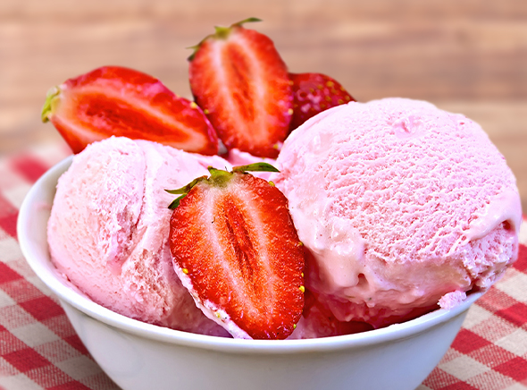

Strawberry Flavored Icecream

Receipe
How to make Strawberry Ice Cream
- In a blender jar, add 1 cup of cold whole milk, ¾ cup cold whipping cream (25% to 35% fat), 8 tablespoons sugar or as needed and 1 cup chopped fresh strawberries.
Make sure to rinse the strawberries first in water a few times. Pat dry them thoroughly and then chop them.
- Blend everything to a smooth and fine mixture.
- Pour the ice cream mixture in a container. Cover tightly and keep in the freezer for the ice cream to set for 4 to 5 hours or as needed.